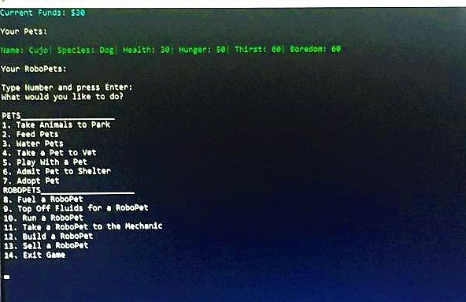

Virtual Pets
Virtual Pets is a Console Application I built with C# using OOP, and TDD. You can add, remove, and interact with Pets and RoboPets in your Virtual Pet Shelter.
My professional journey began in June of 2012 when I left home to join the Navy. During the five years I spent in the Navy Seabees, I traveled to foreign countries, made friends with some really great people, and learned many life lesson’s, but after five year’s I decided to make a change and leave the Navy. I got my CDL a few months later and started driving truck in my hometown for a local company. Although I enjoyed my new career at first, after a while I started feeling like it was time for another change. I then became interested in coding, and decided to join We Can Code It, a coding bootcamp in Cleveland, OH. At We Can Code It, I began learning the modern implementations of C#, HTML, CSS, JavaScript, Object-Oriented programing, API’s, REST along with supporting languages and tools. After 14 weeks of learning these new job skills, I decided to continue my learning and enrolled in the software development course at Eleven Fifty Academy, a coding bootcamp in Indianapolis, IN. I have always enjoyed building things, solving problems, and being creative. Coding gives me a chance to use, and further develop those important skills. I am eager and excited to start this new journey into the tech field.
Reach out to me via email, or visit my GitHub or Linkedin profiles.